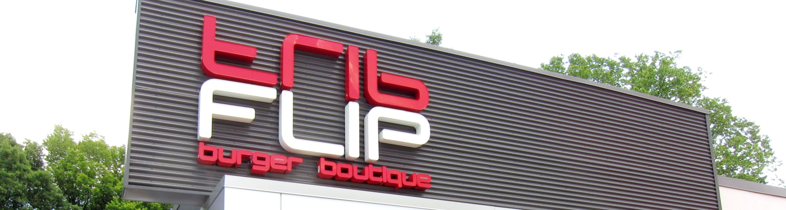

where to go when you're craving cow

Restaurant: Flip Burger
Music: '80s dance-y, lounge-y (currently playing: The Human League - "Don't You Want Me")
Atmosphere: Flip Burger was well-lit and noisy due to the crowd.
Location: 1587 Howell Mill Rd NW, Atlanta, GA 30318

Butcher's Cut